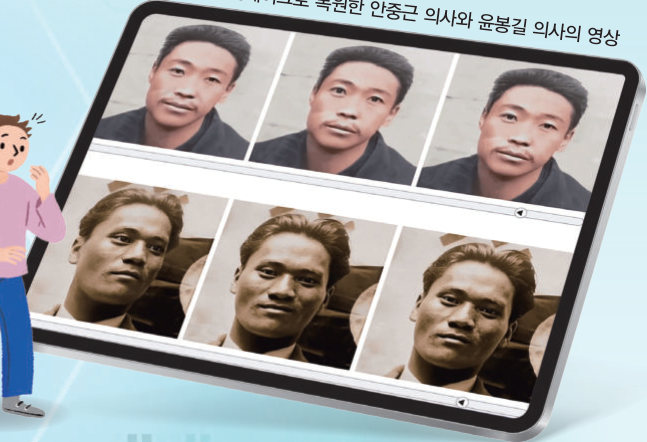

얼굴형에 맞는 머리 모양을 추천하는 인공지능을 만든다면 무엇을 조심해야 할까? 개인 정보 동의서를 따져 보고, 데이터를 가명 처리해 보고, 한쪽으로 치우친 데이터가 모델을 어떻게 바꾸는지 직접 실험한 뒤, 인공지능 윤리 기준과 딥페이크를 생각해 보자.
인공지능 모델은 개발 및 활용하는 과정에서 사회적·법적·윤리적 문제가 생기기도 한다. 인공지능 모델을 생성할 때 여러 가지 요소들을 고려하지 않으면 개인뿐만 아니라 사회에도 부정적인 영향을 미칠 수 있다.
문제 상황 사람마다 얼굴형이 다르고, 이에 따라 어울리는 머리 모양도 다르다. 내가 어떤 얼굴형인지 구분하여 어울리는 머리 모양을 알려 주는 인공지능 시스템을 만들어 보자. — 문제의 해결 방안을 탐구하는 단계에서 사람에게 이로운 인공지능 프로그램인지 확인하고 개발 여부를 판단해야 한다.
문제 해결에 필요한 데이터를 수집할 때에는 개인 정보나 저작권 침해 문제를 주의해야 한다. 수집하려고 하는 데이터가 개인 정보를 포함하고 있을 때는 개인 정보 수집·이용에 대한 동의서를 받은 후 비식별화 처리를 해야 하며, 저작물은 저작권자로부터 사용을 허락받아야 한다.
데이터를 수집할 때에는 데이터가 편향되지 않도록 주의해야 한다. 머리 모양 추천 프로그램에 달걀형, 원형, 역삼각형, 사각형의 클래스로 얼굴형을 구분하였다고 가정해 보자. 긴 얼굴을 어느 클래스에 포함하여 학습시킬지는 사람의 판단에 따라 달라지기 때문에 데이터의 편향이 발생할 수 있다. 이러한 때에는 긴 얼굴 클래스를 새로 생성하는 등 명확한 구분을 제시하여 편향을 최소화해야 한다. 하나의 클래스에만 많은 데이터를 학습시키면 모델 활용 시 데이터가 많았던 클래스로 예측할 가능성이 높으므로 클래스별로 데이터 양의 균형을 맞추는 것이 중요하다.
| 인공지능 스피커가 질문의 의미를 파악하도록 표준어를 중심으로 학습시켰다. | |
| 우리나라 자율 주행 자동차의 신호등 인식 학습에 세로 모양의 외국 신호등 이미지 데이터를 활용하였다. |
우리나라는 과학기술정보통신부에서 사람이 중심이 되는 인공지능 윤리 기준을 크게 3대 원칙과 10대 핵심 요건으로 정하고 있다. 이 윤리 기준에서는 인공지능이 인간에게 유용함과 동시에 인간의 성품을 보존하고 함양하는 방향으로 개발·활용되어야 함을 강조하고 있다.
| 인간의 생명은 물론 정신적 건강에 해가 되지 않는 범위에서 개발 및 활용되어야 한다. | |
| 공동체로서 사회는 가능한 한 많은 사람의 안녕과 행복이라는 가치를 추구한다. | |
| 인류의 삶에 필요한 도구라는 목적과 의도에 맞게 개발 및 활용되어야 하며 그 과정도 윤리적이어야 한다. |
| 사생활 보호, 개인 정보 오용 최소화 | |
| 다양성, 접근성 보장, 비차별성, 편향·차별 최소화 | |
| 침해 금지, 인간에 무해한 목적으로 활용 | |
| 목적 외 용도 활용 금지, 데이터 편향 최소화, 품질·위험 관리 | |
| 설명 가능성, 활용 내용 및 유의 사항 사전 고지 | |
| 잠재적 위험 방지, 안전 보장 |
딥페이크로 알려진 인공지능 이미지 합성 기술은 딥러닝(deep learning)과 가짜(fake)의 합성어로 인공지능을 이용해 사진이나 음성, 영상을 조작하거나 생성하는 기술을 말한다. 딥페이크는 텔레비전 광고나 영화 등 다양한 분야에서 창작물을 생성하는 데 활용되고 있지만, 개인의 얼굴을 합성하여 가짜 영상을 만들어 배포하는 등의 피해가 발생하기도 한다. 이 기술은 사용 방법에 따라 얼마든지 건전하고 올바르게 사용될 수 있기 때문에 무엇보다 올바른 윤리적 태도와 가치관으로 활용하는 것이 중요하다.
| 새로운 창작물과 예술 작품을 만들고 다양한 캐릭터와 시나리오를 구현한다. | |
| 특수 효과를 개선하고 오래된 영상을 고화질로 복원한다. | |
| 역사적 인물이나 사건을 현실적으로 재현하여 교육적 가치를 높인다. | |
| 고인이 된 사람의 목소리를 복원하여 그리워하는 사람을 위로한다. |
| 평가 기준 | 스스로 평가 |
|---|---|
| 인공지능 시스템을 선택하여 문제를 해결하는 과정에서 인공지능의 사회적 역할과 가치를 판단할 수 있는가? | |
| 데이터를 수집·활용할 때 발생할 수 있는 윤리적 문제의 해결 방안을 제시할 수 있는가? | |
| 인공지능 윤리 문제에 대해 근거를 가지고 논리적으로 자신의 주장을 이야기할 수 있는가? |